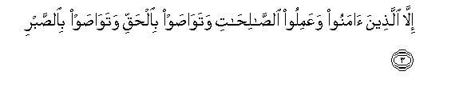

بسم الله الرحمن الرحيم
Sayyid Abul Ala Maududi - Tafhim al-Qur'an - The Meaning of the Qur'an
 103.
Surah Al Asr (The Declining Day, The Time)
103.
Surah Al Asr (The Declining Day, The Time)
The Surah takes its name from the word al-`asr occurring in the first verse.
Although Mujahid, Qatadah and Muqatil regard it as a Madani Surah, yet a great majority of the commentators opine that it is Makki; its subject matter also testifies that it must have been sent down in the earliest stage at Makkah, when the message of Islam was being presented in brief but highly impressive sentences so that the listeners who heard them once could not forget them even if they wanted to, for they were automatically committed to memory.
This Surah is a matchless specimen of comprehensiveness and brevity. A whole world of meaning has been compressed into its few brief words, which is too vast in content to be fully expressed even in a book. In it, in a clear and plain way it has been stated what is the way to true success for man and what is the way to ruin and destruction for him. Imam Shafi has very rightly said that if the people only considered this Surah well, it alone would suffice them for their guidance. How important this Surah was in the sight of the Companions can be judged from the tradition cited from Hadrat Abdullah bin Hisn ad-Darimi Abu Madinah, according to which whenever any two of them met they would not part company until they had recited Surah Al-Asr to each other. (Tabarani)

In the name of Allah, the Compassionate, the Merciful.

[1-3] By the Time! Man is surely in loss, except those who believed and did good works, and exhorted one another to Truth, and exhorted one another to patience.1
1In this Surah an oath has been sworn by the Time to impress the point that man is in sheer loss and only those people are an exception from the loss who are characterized by four qualities:
(1) Faith,
(2) righteous deeds,
(3) exhorting one another to Truth, and
(4) exhorting one another to patience.
Let us consider each of these parts separately in order to understand the meaning fully.
As for the oath, we have explained several times above that Allah has not sworn an oath by any of the created objects on account of its glory or its excellence and wonderful qualities but for the reason that it testifies to the truth which is meant to be established. Therefore, the oath by Time signifies that Time is witness to the truth that man is in sheer loss except for the people who possess the four qualities.
The word time is used for the past as well as for the passing time in which the present, in fact, does not signify any long stretch of time. Every moment, when it has passed, becomes past, and every moment of the future, when it is passing, becomes present, and when it has passed, becomes past. Here, since the oath has been sworn by time absolute, both kinds of time are included in its meaning. The oath by the past time means that human history .testifies that the people who were without these qualities, eventually incurred loss, and in order to understand the significance of the oath by the passing time, one should understand that the time which is now passing is, in fact, the time which has been given to every single individual and every single nation to work in the world. Its example is of the time which is allotted to a candidate for answering his question-paper in the examination hall. The speed with which this time is passing can be estimated from the movement of the second-hand in the watch. Even a second is a considerable amount of time, for during this very second light travels 186,000 miles, and in the Kingdom of God there may as well be many things which move even faster than light, but are net yet known to man. However, if the speed of the passing time be regarded the same as of the movement of the second-hand, and we consider that whatever act, good or bad, we perform and whatever occupation we pursue, takes place in the limited span of age that we have been given for work in the world, we feel that our real wealth is this very time, which is passing so quickly. Imam Razi has cited a scholar as saying: "I understood the meaning of Surah Al-`Asr from an ice-seller, who was calling aloud for the attention of the people repeatedly in the bazaar: 'Have mercy on the one whose wealth is melting away !' Hearing what he was crying I said to myself: this then is the meaning of Wal- asr-i innal-insana la-fi khusr-in. The age-limit that man has been allotted is passing quickly" like the melting away of ice. if it is wasted, or expended in wrong pursuits, it will be sheer loss to man. Thus, swearing an oath by the Time what has been said in this Surah, means that the fast passing Time is witness that devoid of these four qualities in whatever occupation and work man is expending his limited span of life, he is engaged in bad bargains; only such people are engaged in good bargains, who work in the world, characterized by the four qualities. It would be just like calling attention of the candidate, who was expending the time allotted for solving the question paper in some other pursuit, to the wall clock in the examination hall, to tell him that the passing time bore witness that he was causing loss to himself; the candidate benefiting by the Time was he who was using every moment of the allotted time in solving the paper.
Though the word Man has been used in the singular, in the following sentences those people have been made an exception from it, who are characterized by the four qualities. Therefore, one will have to admit that here the word Man has been used as a collective noun, denoting a class, and it applies equally to individuals, groups, nations, and entire mankind. Thus,. the general statement that whoever is devoid of the above four qualities, is in loss, would be proved in any case whether it is a person who is devoid of these, or a nation, or all men' of the world. It will be just like giving the verdict that poison is fatal for man; it will mean that poison is fatal in any case whether it is taken by an individual, or a nation, or all the people of the world. Poison's being fatal is an unchangeable truth; it dces not make any difference whether one man has taken it, or a nation has decided to take it, or all the people of the world collectively have agreed to take poison. Precisely in the same way this truth by itself is unchangeable that man's being devoid of the above foul qualities brings him loss. The general rule is not at all affected even if one man is devoid of these, or a nation, or all the people of the world agree that they would exhort one another to disbelief, immorality, falsehood and servitude to the self.
Now, let us see in what sense has the Qur'an used the word khusr (loss). Lexically, khusr is an antonym of nafa ` (profit); in trade this word is used in the case when loss results from one bargain as well as in the case when the whole business is running in loss, and also in the case when man loses all his capital and becomes bankrupt. The Qur'an has made this word a special term of its own and uses it as an antonym of falah (true success). And just as its concept of falah is not merely synonymous with. worldly prosperity but comprehends man's true success from the world till the Hereafter, so its concept of khusr (loss) also is not merely synonymous with worldly failure or distress but comprehends man's real failure and disappointment from the world till the Hereafter. We have explained the Qur'anic concept of both falah and khusran at several places above which need not be repeated here. (For this please see E.N. 9 of Al-A`raf, E.N. 30 of Al-Anfal, E.N. 23 of Yunus, E.N. 102 of Bani Isra'il, E.N. 17 of Al-Hajj, E N.'s 1, 2, 11, 50 of AI-Mu'minun, E.N.4 of Luqman, E.N. 34 of Az-Zumar). Besides., one should also understand that although according to the Qur'an true success is man's success in the Hereafter and real loss his failure there, yet in this world too what the people describe as success is not, in fact, real success but its end in this world itself is failure, and what they regard as loss is not, in fact, loss but a means of true success even in this world. This truth has been stated by the Qur'an at several places and we have explained it everywhere accordingly. (Please see E.N. 99 of An-Nahl E.N. 53 of Maryam, E.N. 105 of Ta Ha, E.N.'s 3-5 of Al-Lail). Thus, when the Qur'an states conclusively and absolutely that Man is certainly in loss, it implies loss both in this world and in the Hereafter; and when it says that only such people are secure from this loss, who are characterised by the four qualities, it implies their being secure from loss and attaining true success both here and in the Hereafter.
Now, let us consider the four qualities on the existence of which depends man's being secure from loss and failure.
Of these the first quality is Iman (Faith). Although this word at some places in the Qur'an has been used in the meaning of only verbal affirmation of Faith (e.g. in An-Nisa': 137, AI-Ma'idah 54, Al-Anfal: 20, 27, At-Taubah: 38, As-Saff: 2) it has primarily been used in the meaning of believing sincerely and faithfully, and in the Arabic language also this word has this very meaning. Lexically, amanu lahu means saddaqa-hu wa `tamada 'alai-hi: "affirmed him and put faith in him", and amana bi-hi means aiqana bi hi: "had full faith in him." The Faith which the Qur'an regards as true Faith has been explained in the following verses:
"In fact, true believers are those who believed in Allah and His Messenger, then entertained no doubt." (Al-Hujurat: 15)
"Those who said: 'Allah is our Lord', and then stood steadfast by it." (Ha Mim As-Sajdah : 30)
"True believers are those whose hearts tremble with awe, whenever Allah is mentioned to them. (AI-Anfal : 2).
"Those who have believed adore Allah most ardently." (AI-Baqarah 165)
"Nay, (O Prophet), by your Lord, they can never become believers until they accept you as judge for the decision of the disputes between them, and then surrender to your decision with entire submission without the least resentment in their hearts." (An-Nisa': 65).
The following verse is even more explicit as regards the distinction between verbal affirmation of Faith and true Faith; it says that what is actually desirable is true Faith and not mere verbal affirmation of the Faith:
"O you who profess to have believed, believe sincerely in Allah and His Messenger." (An-Nisa': 136)
As for the question, what has one to believe in, in order to have true faith? This also has been answered and explained in the Qur'an most explicitly. First, it implies that one has to believe in Allah, not merely in His Being but in the sense that He alone is God; no one else is an associate in His Godhead; He alone is worthy that man should worship, serve and obey Him; He alone can make or mar destinies; man should invoke Him alone and have trust in Him alone; He alone can enjoin things and forbid things; man is under obligation to obey Him and refrain from what he forbids; He sees everything and hears everything; not to speak of any act of man, even his motives and intentions with which he has done an act, are not hidden from Him. Secondly, one has to believe in the Messenger, in the sense that he is a guide and leader appointed by Allah: whatever he has taught, is from Allah, is based upon the truth and has to be acknowledged and accepted. This belief in Apostleship also includes faith in the angels, the Prophets, the Divine Books and in the Qur'an itself, for this forms part of the teachings which the Messenger of Allah has given. Thirdly, one has to believe in the Hereafter, in the sense that man's present life is not his first and last life, but after death man has to be resurrected, to render an account to God of the deeds done in the present life, and has to be rewarded for the good deeds and punished for the evil deeds accordingly. This Faith provides a firm basis for morality and character, upon which can be built the edifice of a pure life, whereas the truth is that without such Faith, the life of man, however beautiful and pleasing outwardly, is like a ship without an anchor, which is at the mercy of the waves wherever they may take it.
After Faith the second quality required to save man from loss is to perform righteous deeds (salihalt) Salihat comprehends all kinds of virtuous and good deeds. However, according to the Qur'an, no act can be a good act unless it is based on Faith and it is performed in obedience to the guidance given by Allah and His Messenger. That is why in the Qur'an exhortation to perform good deeds is preceded everywhere by Faith, and in this Surah too it has been mentioned after the Faith. Nowhere in the Qur'an has a deed without Faith been called a good deed, nor any reward promised for a deed performed without Faith. On the contrary, this also is a fact that only that Faith is reliable and beneficial, the sincerity of which is proved by man's own act and deed, otherwise Faith without righteous deeds would be a false claim refuted by the man himself when in spite of this claim he follows a way opposed to the way taught by Allah and His Messenger. The relationship between Faith and righteous deed is of the seed and the tree Unless the seed is sown in the soil no tree can grow out of it. But if the seed is in the soil and no tree is growing out of it, it would mean that the seed is lost in the soil. On this very basis whatever good news has been given in the Qur'an, has been given to the people who believe and do good deeds, and the same has been reiterated in this Surah. What man requires to do after the Faith in order to remain secure from loss is to perform righteous deeds. In other words, mere Faith without righteous deeds cannot save man from loss.
The above two qualities are such as must be possessed by every single individual. Then, the Surah mentions two further qualities, which a man must have in order to be saved from loss. They are that the people who believe and do good deeds must exhort one another to truth and to patience. This means that. in the first place, a believing and righteous people should not live as individuals but should create a believing and righteous society by their combination. Second, that every individual of this society must feel his responsibility not to let the society become degenerate. Thus, all its members are duty bound to exhort one another to truth and to patience.
Truth is the antonym of falsehood, and generally it is used in , two meanings:
(1) A correct and right thing which is in accordance with justice and truth, whether it relates to belief and faith or to mundane affairs; and
(2) the right which is obligatory on man to render, whether it is the right of God, the right of man, or the right of one's own self. Thus, to exhort one another to truth means that the society of the believers should not be so insensitive that falsehood may thrive and things against justice and truth be done in it, and the people be watching everything indifferently. On the contrary, it should be a living, sensitive society so that whenever and wherever falsehood appears, the upholders of the Truth should rise up against it, and no member of the society rest content with only himself adhering to truth, righteousness, justice and rendering the rights of others, but should exhort others also to adopt the same way of life. This is the spirit that can ensure security of a society against moral degeneration and decay. If a society becomes devoid of this spirit, it cannot remain secure from loss, and eventually even those people also are affected by the loss, who might in their own way be adhering to the truth, but were insensitive to violation of the truth in their society.
The same has been stated in Al-Ma'idah, thus: "Those who adopted the way of disbelief among the children of Israel were cursed by the tongue of David and of Jesus, son of Mary, because they had grown rebellious and become transgressors: they would not forbid one another to do the wrong deeds they committed. (w. 78-79).
Then the same idea has been expressed in Al-A`raf, thus: "When the children of Israel totally forgot the teachings (of observing the Sabbath), We seized with a severe scourge all those who were transgressors, and We saved those who used to forbid evil" (v. 165); and in Surah Al-Anfal, thus: "And guard against that mischief which will not bring punishment in particular to the mischief-makers alone from among you." (v. 25) That is why to enjoin what is good and to forbid what is evil, has been enjoined on the Muslim community as a duty (Al-`Imran 104) and the community which performs this duty has been declared to be the best community (Al-`Imran: 110).
Besides exhorting to the truth, the other thing which has been declared as a necessary condition for keeping the believers and their society secure from loss is that the members of the society should enjoin patience upon one another. That is, they should enjoin upon one another to bear with fortitude and steadfastness the difficulties, hardships, trials, losses and deprivations which befall the one who adheres to the truth and supports it. Each one of them should encourage the other to bear up against adversity steadfastly. (For further explanation, see E.N. 16 of Ad-Dahr, E.N. 14 of Al-Balad).